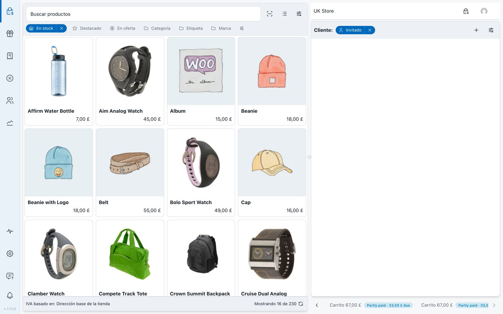

POS Screen Overview
The POS screen is where you sell. It has three areas: the navigation drawer on the left, the products column in the middle, and the cart on the right.
Screen layout
Register bar
The bar at the top of the cart shows the store you are selling in, the register and cash drawer this device is using, and your user menu.
Products
Search by name, SKU or barcode, scan with the camera, switch between grid and list, and filter with the quick-filter bar. Use the settings button at the end of the filter bar to choose which filters appear.
Cart
Choose a customer, add items, and use the settings button to choose which columns the cart shows. Orders you've parked appear as tabs along the bottom of the cart, with their payment status.
Panels
Settings and forms open as a panel beside the screen rather than a dialog in the middle. Close one with Close or the ✕.
{/* Screenshot: pos-desktop-layout.png */}. The one image this page would have in style A.
Style A keeps today's character. A new concept (panels, the register bar) is described in words and depends on the reader picturing it.
POS Screen Overview
The POS screen is where you sell. Here's the whole screen, numbered.

1
2
3
4
5
6
7
8
9
10
- Navigation drawer: POS, Products, Orders, Coupons, Customers, Reports; Store health, Settings and Support at the bottom. The version sits at the foot.
- Search: by name, SKU or barcode. Beside it: camera scan, grid/list and product settings.
- Quick filters: in stock, featured, on sale, category, tag, brand. The last button chooses which filters show.
- Products: tap one to add it to the cart.
- Divider: drag it to resize the columns.
- Register bar: store. The store you're selling in.
- Register bar: register and drawer. The register session this device is using.
- Customer: Guest until you choose one.
- Cart settings: opens the panel below.
- Open orders: parked orders as tabs, with their payment status (here, partly paid).
Panels
Settings and forms open as a panel that slides over part of the screen, so the sale stays visible behind it. The cart settings panel, for example, holds quick-discount amounts, open-order position and which columns the cart shows.
Close a panel with Close, the ✕, or Esc.
Style B puts one annotated picture where the concept is new, and keeps prose for everything else. Both images were captured by the same script.